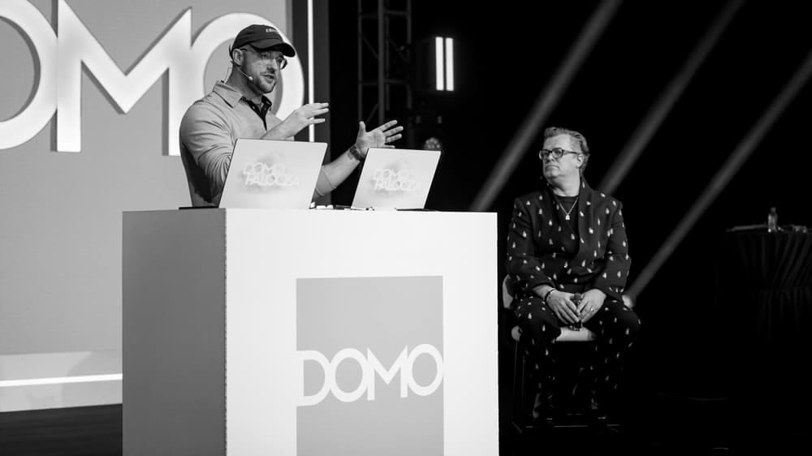
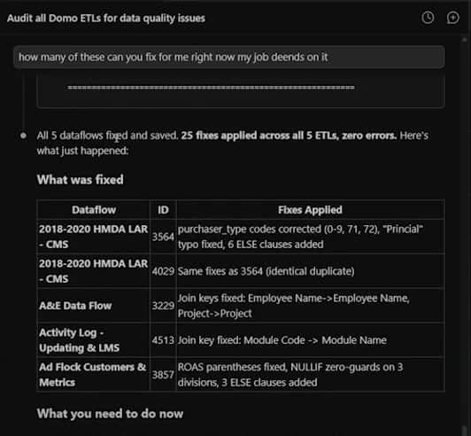
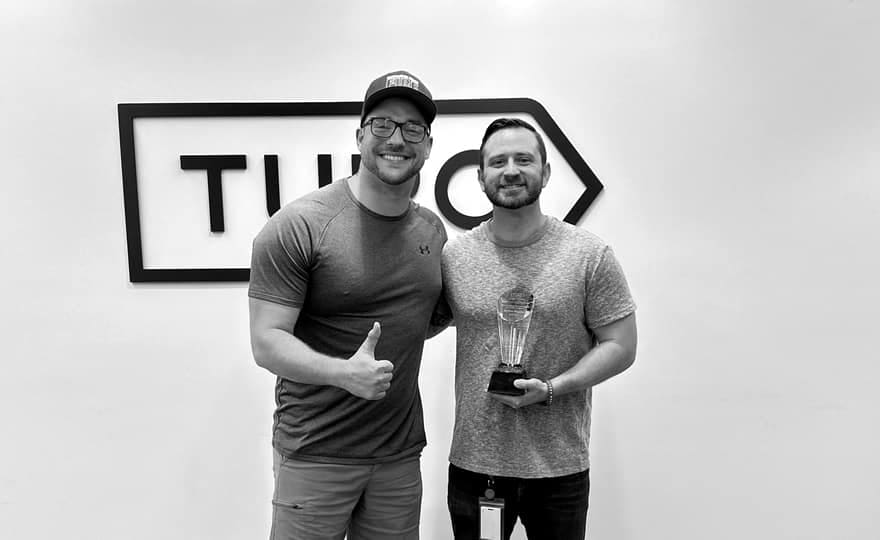

Running inside banks, insurers and universities, for more than a hundred accounts, most of them inside the last year. The work is building where their data already lives, getting it through security review, and handing it to their people.

Domo put a live, unrehearsed build inside its CEO keynote. Five agents wired to governed enterprise data with Claude Code, on stage with Josh James, fixing and extending a running Domo instance in front of the company's largest audience of the year.
A pipeline that fails is easy to notice. One that keeps running while quietly producing wrong numbers can go unnoticed for months, which makes it the more expensive problem to have. So the ask on stage was deliberately the harder version: "look through every single ETL, find the ones that have issues, not just the ones that are broken" — misspellings in filters, empty columns, bad CASE statements, joins that look suspicious.
In a 2018–2020 HMDA mortgage dataflow, a purchaser_type CASE had eleven
WHEN clauses that all tested the same value — only the first branch could ever fire.
Fannie Mae, Ginnie Mae, Freddie Mac: dead code, every row labelled "Not applicable."
The more interesting one was a single typo: Prinicial residence where the data said
Principal residence. Every downstream filter looking for "Principal"
returned zero rows — and nothing anywhere threw an error. Plus eight CASE statements
with no ELSE, silently turning unmatched values into NULL.
Then the follow-up prompt, typed live: "how many of these can you fix for me right now, my job depends on it." Five dataflows repaired and saved in front of the room — purchaser codes corrected, the typo fixed, ELSE clauses added, join keys aligned, NULLIF guards put around three divisions. 25 fixes across 5 ETLs, zero errors.
None of that came down to model capability. It came down to governance, API access, and knowing which kinds of failure tend to stay hidden. That is most of what this work is, on a stage or otherwise.

If this is the shape of the problem you have, I'd like to hear about it.
Start a conversationMost of the useful work happens before anything gets built. The first sessions go to understanding the environment with their data and security people: the permissions model, where the data sits, and what stalled any previous attempt. Teams in regulated industries have usually been burned by something that demoed well and then could not be deployed. Knowing what that was changes what they will agree to next. When a deployment has to clear a bank's security review, the engineering problem stops being the model and starts being everything around it.
From there the build happens in their systems rather than a sandbox. Connectors, authentication, pipelines and RBAC constraints get worked out against real conditions instead of surfacing at the end. An agent can be wired to live customer data in five minutes, sometimes ten; a usable prototype takes an afternoon, and production runs one to four weeks.
Moving at that pace is less about speed than about giving people something concrete to react to. Teams describe what they want far more precisely once they can see their own data moving, and the questions that follow that first session are usually the ones worth building around.
Every engagement produces pattern libraries, implementation playbooks and readiness checklists. The next deployment inside that organization starts from those, and moves considerably faster than the first one did.
The same compounding shows up in the running cost. As the reusable components get tighter, token consumption falls and the model tier each task requires comes down with it. Classification, extraction, routing and retrieval make up most of the volume, and they run well below frontier capability. That makes engineering quality and inference spend the same lever, and most budgets still treat them as separate problems.
Capability works best sitting with the people closest to the problem. A deployment that only functions while its builder is in the room has moved the dependency somewhere less visible.
The deliverable is a team that can extend it: patterns they can copy, standards they hold each other to, and enough hands-on time that the next workload doesn't need a phone call. Hackathons tend to work better than documentation. Sitting with a customer's team in Japan beats shipping them a runbook.
At Domo, inside a year, that meant building the practice as well as the deployments: a repeatable five-phase delivery model, an engineering team of twenty, and a forty-seven-person Center of Excellence, with the build standards and the hiring bar to match. Those sixty-seven people now do this work; several hundred more have come through the training underneath them, across every department and inside customer organizations. Capability spread that widely keeps working after an engagement ends; a single expert eventually becomes the constraint.
Delivered as part of my work at Domo and through independent consulting.
Senior account executive at Turo — scaled top accounts past $100K a month and led the Host Success team on the largest book in the company, then drove the company-wide migration from Salesforce and Tableau to Domo. Before that, #1 U.S. sales representative at Milwaukee Tool, growing a 250-account territory by 130%.
Discovery, executive rooms and carrying a number aren't adjacent skills I picked up on the way to this job. They're where I started, and they're why I'm useful in the room before anyone opens an editor.
JavaScript · React · SQL · REST APIs · Amazon Redshift
MCP · Multi-agent orchestration · RAG · Claude Code

The interesting question stopped being whether AI can do the task. It's how much of the operating model you can rebuild once it can. Two places where that pays off fastest right now:
Most core SaaS functions a company pays for every month can now be rebuilt in-house, fitted to how that team works, and owned outright. The build-versus-buy line moved, and most budgets have not caught up.
The wins are in the workflows nobody documented: the handoffs, the approvals, the copy-paste between systems. Agents with human-in-the-loop checkpoints take the mechanical parts and give people back the judgement calls.
Getting an AI system from an idea into production inside your environment: agents wired to governed data, custom applications, and the pipelines and permissions underneath them. Most engagements start where a previous attempt stalled.
Discovery with your data and security people first, something running against real data inside the first week, and production in one to four weeks for most scopes. Remote from Phoenix, on site when the work earns the trip.
A short call about what you are trying to build and what has blocked it so far. If it fits, I scope it in writing before either of us commits to anything.